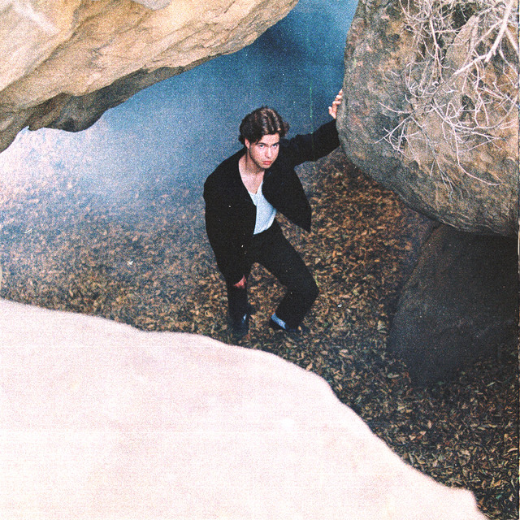
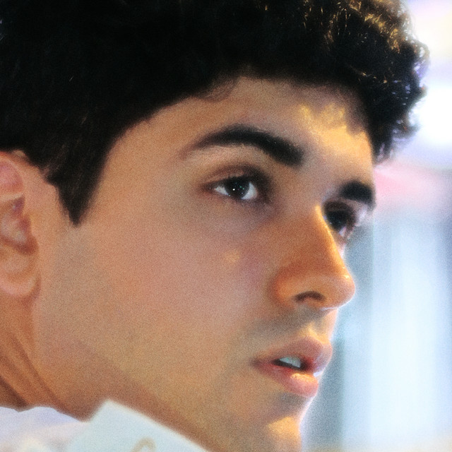

Chill music has the vibe that would be perfect for studying or relaxing at night. The soft beats and soothing vocals make it easy listening and enjoyable for most people.
2 soon

2 soon by Keshi is over an atmospheric instrumental, where he tells the story of a man going through the aftermath of a failed relationship, and the impuslve behavior that follows, such as seeking affection from others to fill their needs. This song brings about feelings of sorrow and empathy, while creating a calming mood.
Dancing with Your Ghost by Sasha Alex Sloan

Dancing with Your Ghost features beautiful vocals that is very reminiscent. This song speaks loudly about recent loss and memories. This song is perfect to vibe along with during a long car ride.
I Should've Told You by Fiji Blue
I Should've Told You is a catchy summer nights song that captures very slightly upbeat tones. Hearing this love song makes listeners feel bright and hopeful.
ily by Surf Mesa
ily is remake of the popular classic "I Love You Baby" by Frank Sinatra. This song, in comparison, is more sentimental and futuristic with the soft pop beats and vocals.
lovely by Billie Eilish and Khalid
lovely by Billie Eilish is a masterpiece that shows off both artists incredible vocals. The switch offs between pure vocals and heavy build ups makes the song absolutely jaw-dropping.
Lowkey by NIKI
Lowkey by NIKI is a catchy song with fiesty notes. This song encapsulates what I most envision as chill music. The bell sounds and bass in the background make the song so unique, coupled with her breathy voice.
Rollerblades by Blake Rose
Rollerblades is by a more lowkey artist that deserves so much more fame. I would use this song in a coming of age movie as it brings about feelings of youthfulness and growth. The band that is featured in the back is a perfect way to accompany the song.
Double Take by Dhruv
Double Take has a sexy and mature feel to it. The groovy vocals and guitar notes make the song addictive. Dhruv is able to switch into falsetto ever so slightly, making the song even more mesmerizing.
Alone With You by Alina Baraz
Alone With You has a very sensual vibe, combining beats and breathy vocals that resonate deeply. This song is a perfect listen on a gloomy rainy day indoors.